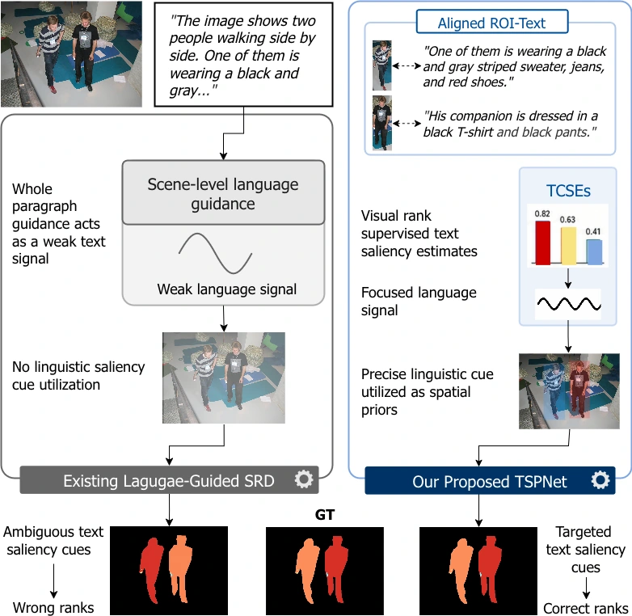
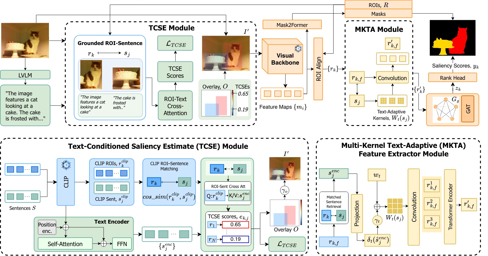

Abstract
Saliency ranking detection (SRD) identifies multiple salient objects and orders them by relative visual importance. Existing methods mainly infer this hierarchy from visual appearance and inter-object reasoning, while recent language-guided approaches use descriptions largely as global scene context or caption-derived relations. We argue that language can more effectively complement visual evidence for SRD when object-referential sentences guide saliency ranking at the object level.
We propose TSPNet, a framework that converts detailed image descriptions into object-level auxiliary priors for saliency ranking. Without direct sentence–object saliency annotations, TSPNet learns text-conditioned auxiliary scores for CLIP-matched ROI–sentence pairs using human-annotated saliency ranks as indirect ordinal supervision. It renders these scores as spatial heatmap priors, while the corresponding text representations guide ROI feature refinement. This extends language guidance beyond global caption modulation toward ROI-specific saliency reasoning. Experiments on ASSR, IRSR, and SIFR show consistent improvements over strong recent baselines in the primary ranking metrics, SA-SOR and SOR. Ablations further show that these gains depend on meaningful linguistic cues and correct ROI–sentence correspondence.
Introduction
Attributes, interactions, and descriptive detail of objects in image descriptionscan provide useful cues about their visual importance.
Using an entire paragraph as global context as done in previous works can dilute object-specific cues. TSPNet instead matches each candidate region to an object-referential sentence. The combined ROI and sentence representations are converted into spatial priors by rendering them into the input image as heatmap overlays. The resulting image is used by by the pipeline to derive text-guided saliency ranks for each annotated object.
Because direct sentence–ROI saliency annotations are unavailable, these scores are trained with pairwise ordinal supervision from ground-truth saliency ranks.
The matched text is also used to refine their corresponding ROI features for additional text guidance.


EnlargeMethod
Object grounding, text-conditioned spatial priors, and text-adaptive visual features.


Enlarge- Match sentences to objects. A separately trained segmentation branch predicts ROIs for the objects. Frozen CLIP encoders match each ROI to the most similar sentence in the image description. Low-similarity matches use empty text.
- Learn spatial priors. The Text-Conditioned Saliency Estimate (TCSE) module obtains text-conditioned saliency scores (TCSEs) for the ROI–sentence pairs using pairwise ordinal supervision (TCSE Loss) from human saliency ranks. A gated heatmap overlay injects these scores into the visual input.
- Refine and rank. The Multi-Kernel Text-Adaptive (MKTA) module uses matched text to generate convolutional filters to refine the backbone generated ROI features. Scene-context reasoning between the text-refined ROI features then produce final object-level saliency ranking.
Experimental Results
Evaluated on three saliency-ranking benchmarks with CNN and Transformer backbones.
| Method | Backbone | SA-SOR ↑ | SOR ↑ | MAE ↓ |
|---|---|---|---|---|
| CNN-based | ||||
| RSDNet | ResNet-101 | 0.6313 | 0.7758 | 0.1236 |
| ASSR | ResNet-101 | 0.5400 | 0.7920 | 0.1010 |
| IRSR-U | ResNet-50 | 0.7051 | 0.8314 | 0.0923 |
| IRSR-L | ResNet-50 | 0.7090 | 0.8283 | 0.0914 |
| SOR | VoVNet-39 | 0.6371 | 0.8330 | 0.0799 |
| QAGNet | ResNet-50 | 0.7545 | 0.8514 | 0.0619 |
| LG-SOR | ResNet-50 | 0.7360 | 0.8875 | 0.0650 |
| TSPNet | ResNet-50 | 0.7975 | 0.9002 | 0.0913 |
| TSPNet | ResNet-101 | 0.8117 | 0.9071 | 0.0621 |
| Transformer-based | ||||
| OCOR | Swin-L | 0.6413 | 0.8843 | 0.0786 |
| QAGNet | Swin-B | 0.7741 | 0.8583 | 0.0538 |
| QAGNet | Swin-L | 0.7793 | 0.8591 | 0.0492 |
| LG-SOR | Swin-L | 0.7810 | 0.8920 | 0.0490 |
| TSPNet | Swin-B | 0.8146 | 0.9057 | 0.0480 |
| TSPNet | Swin-L | 0.8142 | 0.9104 | 0.0459 |
Results from Table 2 of the paper. Blue rows denote TSPNet; bold values mark the best result within each backbone family for the selected dataset. Baselines retain their native inference pipelines.
On ASSR, CNN-based TSPNet achieves SA-SOR improvment of 7.58% and SOR improvment of 2.21% over the best baseline. Transformer-based TSPNet achieves SA-SOR improvment of 11.57% and SOR improvment of 2.06% over the best baseline.
Qualitative Results
Object-level rankings across diverse scenes from IRSR.

Diagnostic Ablations
How textual cues, spatial priors, training objectives, and caption sources affect saliency ranking.
Text Perturbations
Compare complete descriptions with empty, sentence-mixed, and image-shuffled textual cues.
| Setting | SA-SOR ↑ | SOR ↑ |
|---|---|---|
| Empty captions | 0.6977 | 0.8424 |
| Sentence-mixed (20%) | 0.7022 | 0.8542 |
| Sentence-mixed (100%) | 0.6917 | 0.8488 |
| Image-Shuffled | 0.6937 | 0.8490 |
| Full Caption | 0.7144 | 0.8613 |
The full-caption setting uses the original image-specific descriptions. Sentence mixing replaces sentences with text sampled from other images.
Overlay Perturbations
Compare spatial TCSE guidance with image-only input, scalar priors, and alternative overlays.
| Setting | SA-SOR ↑ | SOR ↑ |
|---|---|---|
| Image Only | 0.6949 | 0.8502 |
| RGB Overlay Only | 0.3788 | 0.6939 |
| Image + Scalar Prior | 0.6845 | 0.8471 |
| Image + Shuffled RGB | 0.6985 | 0.8519 |
| Image + Uniform RGB | 0.7001 | 0.8526 |
| Image + Uniform Grayscale | 0.6980 | 0.8519 |
| Image + TCSE Grayscale | 0.7100 | 0.8588 |
| Image + TCSE RGB | 0.7144 | 0.8613 |
Uniform overlays test spatial support without ROI-specific score variation. TCSE grayscale and RGB encode the learned object-specific scores.
Loss Analysis
Compare auxiliary TCSE supervision, final visual-ranking supervision, and their combination.
| Training objective | SA-SOR ↑ | SOR ↑ |
|---|---|---|
| LTCSE | 0.3892 | 0.6872 |
| Lvisrank | 0.6806 | 0.8425 |
| LTCSE + Lvisrank | 0.7144 | 0.8613 |
LTCSE supervises the auxiliary scores; Lvisrank supervises the final predicted saliency ranks. Both losses together give the best reported results.
ROI–Text Matching Degradation
Shuffle increasing fractions of matched sentences across ROIs after CLIP matching.
| Shuffled matches | SA-SOR ↑ | SOR ↑ | ρ ↑ |
|---|---|---|---|
| 0% | 0.7144 | 0.8613 | 0.44 |
| 25% | 0.7018 | 0.8538 | 0.40 |
| 50% | 0.6845 | 0.8447 | 0.34 |
| 75% | 0.6729 | 0.8407 | 0.30 |
| 100% | 0.6671 | 0.8383 | 0.30 |
ρ is the Spearman correlation between TCSE scores and ground-truth ranks. The 0% setting retains the original matched ROI–sentence correspondence.
LVLM Caption Generators and Latency
Compare caption sources by ranking accuracy and caption-generation cost.
| LVLM | SA-SOR ↑ | SOR ↑ | t_d (s/image) ↓ | t_off (min) ↓ | t_on (min) ↓ |
|---|---|---|---|---|---|
| InternVL3.5-8B | 0.6832 | 0.8444 | 0.32 | 1.65 | 17.29 |
| LLaVA-7B | 0.7112 | 0.8500 | 0.38 | 1.65 | 20.22 |
| Qwen2-VL-7B | 0.6967 | 0.8536 | 0.23 | 1.65 | 12.89 |
| InstructBLIP-7B | 0.6975 | 0.8536 | 0.33 | 1.65 | 17.78 |
| Gemma3-12B | 0.7112 | 0.8580 | 0.36 | 1.65 | 19.24 |
| ShareGPT4V-7B | 0.7144 | 0.8613 | 0.30 | 1.65 | 16.31 |
Each caption-source setting is trained and evaluated separately on IRSR. td is caption-generation time per image in seconds. toff is cached-caption inference time, and ton includes caption generation; both are measured in minutes over the full test split. Timings use two RTX 4090 GPUs. Bold marks the highest ranking scores or lowest varying latency; cached-caption times are tied.
Effect of Linguistic Cues
Compare caption length, caption source, and the linguistic content available to TSPNet.
| Caption variation | SA-SOR ↑ | SOR ↑ |
|---|---|---|
| Short captions (Human) | 0.6856 | 0.8453 |
| Short captions (LVLM) | 0.6842 | 0.8488 |
| w/o Adjectives/Adverbs | 0.6877 | 0.8500 |
| Shuffled Sentence Order | 0.7028 | 0.8512 |
| w/o Relational Expressions | 0.6877 | 0.8517 |
| Full Long-Form Descriptions | 0.7144 | 0.8613 |
The short-caption comparison uses human-written MSCOCO captions and short LVLM captions. The other settings modify the linguistic content of the long-form descriptions.
BibTeX
If you find our work useful, please consider citing: